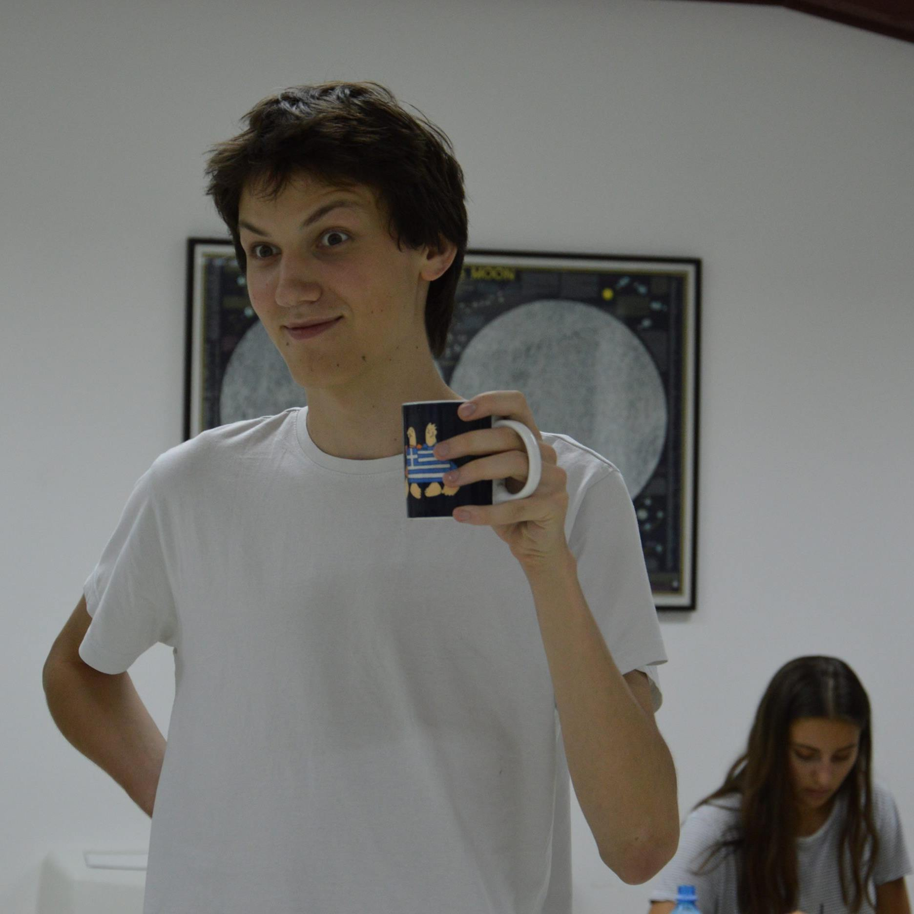

Zovem se Lazar Živadinović  i student sam druge godine visoke ICT škole. Pre toga sam studirao astrofiziku na Matematičkom fakultetu (upisao 2013). Od oblasti me najviše zanima solarna astrofizika. Išao sam na prakse na Max Plank institut za istraživanje Sunčevog sitstema u Getingenu gde sam radio na projektu kvantizacije Pojntingovog fluksa na snimcima visoke vremenske rezolucije. Takođe sam bio na nacionalnoj opservatoriju u Ondrejovu gde sam razvijao alat za detekciju i praćenje Sunčevih pega sa HMI snimaka.
Od 2017. radim u firmi ITekako kao devops. Zaduženja su mi automatizacija deploy procedura, beckup sistema, postavljanje skalabilnih sistema (gde je to moguće), monitoring, održavanje servera i mreže. Takođe sam razvijao PoC api-je za neke projekte. Volim da se igram sa hardverom. Od programskih jezika znam python (flask, numpy, scipy, matplotlib, astropy i učim trenutno tensorflow), IDL (solarsoft), bash scripting. Koristim linux (btw i DONT use arch), a kući se igram sa OpenBSD.
Contributor sam na par projekata vezanih za solarnu astrofiziku sunpy i enhance.
U principu, pregoreo sam na astrofizici, ako se nekada predomislim, završiću astrofiziku. ICT sam upisao da bih imao diplomu sa kojom bih mogao da konkurišem kao IT staff na institutima za solarnu astrofiziku. Želim da pravim automatske procedure za obradu podataka sa teleskopa. Uskoro stiže DKIST i EST i voleo bih da radim na tim teleskopima.
Moj CV možete preuzeti ovde.
P.S. Deploy procedura za ovaj sajt je bukvalno git pull u crontabu sa ovog repoa.